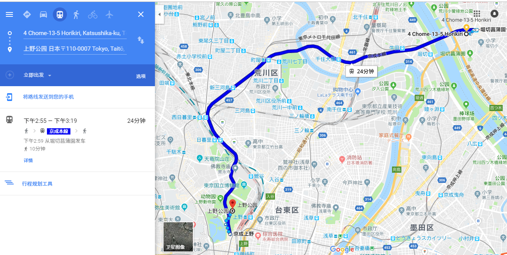

| 日期 | 地点 | ||
2019-4-2 东京D1 TokyoD1 | 去上野公园赏樱花 Go to ueno park to see cherry blossoms |  | |
浅草寺,东京最古老的寺庙 Asakusa temple, the oldest temple in Tokyo |  | ||
隅田公园,赏樱 Sumida park, cherry blossoms |  | ||
天空树,日本最高的塔 Sky tree, the tallest tower in Japan |  | ||
回旅店 Back to the hotel |  | ||
2019-4-3 东京D2 TokyoD2 | 皇城,江户府 Imperial city, edo house |  | |
千鸟渊 Plover deep |  | ||
银座 Ginza |  | ||
东京铁塔 Tokyo tower |  | ||
涩谷,乐器店,忠犬八公像 Shibuya,Musical Instruments, Hachiko the faithful dog |  | ||
回旅店 Back to hotel |  | ||
2019-4-4 东京->伊豆D1 Tokyo to Izu D1 | 包车前往 charter |  | |
镰仓, 镰仓高校前站 湘南海岸公園 Kamakura, Kamakura high school front station Xiangnan Marine park |  | ||
河口湖,富士山 Kawaguchi lake, Mount Fuji | |||
东京备选 TOKYO backlog | 目黑川 Meguro Gawa |  | |
明治神宫(日本人结婚圣地) Meiji shrine |  | ||
2019-4-5 伊豆D2 IZU D2 | 仙人掌公园 Cactus park |  | |
城崎海岸 游船 Yamazaki coast A cruise ship |  | ||
海洋公园 Ocean Park |  | ||
回旅店 Back to the hotel |  | ||
2019-4-6 伊豆D3 -> 京都D1 Izu d3-> Kyoto D1 | 出发去奈良公园 Off to nara park |  | |
奈良公园, 兴福寺 Nara park, Xing fu temple |  | ||
包车去京都住所 Charter a car to live in Kyoto |  | ||
2019-4-7 京都D2 Kyoto D2 | 保津川漂流 Baojin river drift |  | |
下船点, 可以去附近的竹林の小径 Get out, Can go to a nearby bamboo の trails |   | ||
“Miyako Odori” 2019|祇園甲部歌舞会 "Miyako Odori" 2019 |  | ||
锦市场, 特色购物 Jin market, Characteristics of shopping |  | ||
鸭川 先斗町, 小吃 kamogawa The bucket at first, snacks |  | ||
八坂神社 提灯美景 Eight sakaguchi shrine Lantern beauty |  | ||
回旅店 Back to the hotel |  | ||
2019-4-8 京都D2->大阪D1 Kyoto D2-> Osaka D1 | 金阁寺, 门票值得收藏 Gum kuo restaurant temple, Tickets are worth collecting |  | 备选 |
回旅店, 等包车 Back to the hotel, wait charter |  | ||
前往大阪 Travel to Osaka |  | ||
大阪城公园 Osaka city park |  | ||
| 天守阁 Osaka Castle |  | ||
道顿堀美食街 心斋桥购物街 Dotonbori food court Shopping street, xinzhai bridge |   | ||
回旅店 Back to the hotel |  | ||
2019-4-9 大阪D2 Osaka D2 | 四天王寺 大阪最古老寺庙 The four heavenly Kings temple The oldest temple in Osaka |  | |
通天阁,新世界 标志性建筑 Tongtiange, a new world Landmark building |  | ||
大阪水族馆 Osaka aquarium |  | ||
回旅店 Back to hotel |  | ||
2019-4-10 大阪D3 Osaka D3 | 旅店周围公园逛逛, 中午回到旅店, 包车去机场 Around the park, Back at the inn at noon, Charter a bus to the airport |  | 15:45飞机 需要中午就回到旅店,出发去机场 |